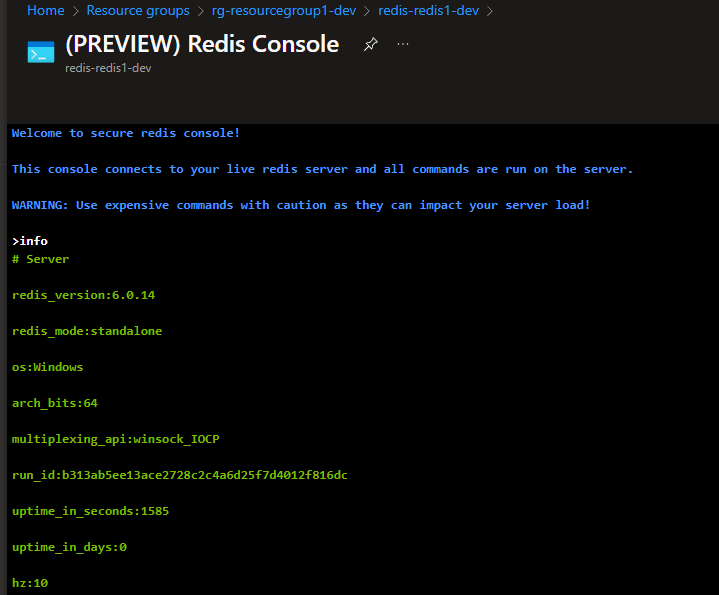
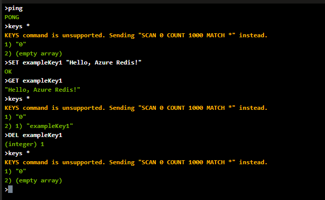
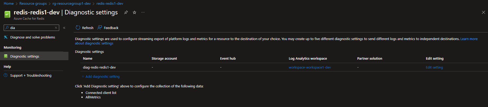
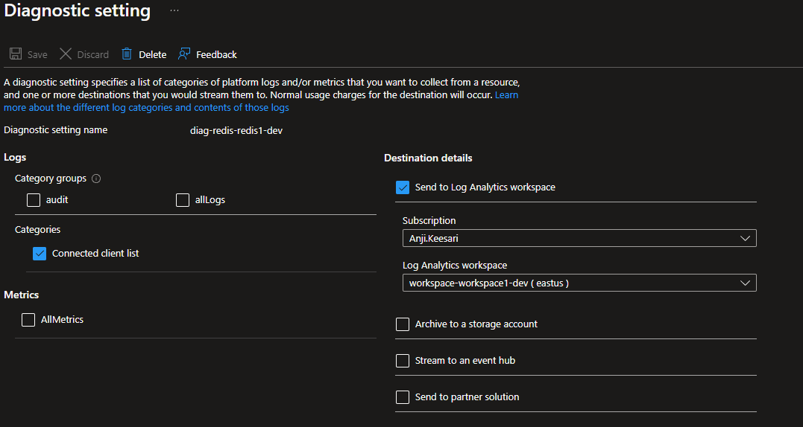
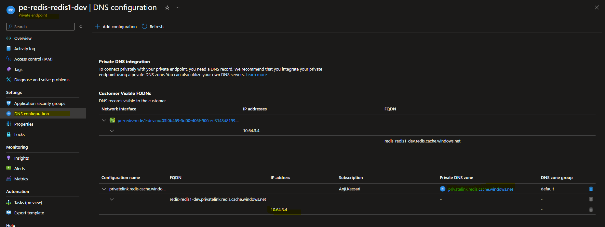
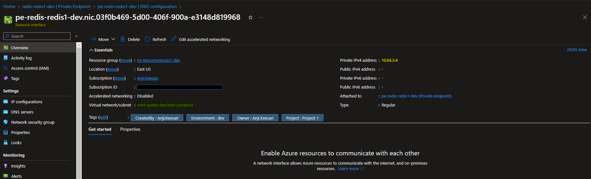

Create Azure Cache for Redis using Terraform
Introduction
Azure Cache for Redis is a fully managed, in-memory data store that offers high throughput and low-latency access to cached data. In this lab, we'll utilize Terraform's Infrastructure as Code (IaC) capabilities to provision and configure an Azure Cache for Redis resource.
In this lab, I will walk through the steps to create an Azure Cache for Redis using Terraform. I'll also configure diagnostic settings to monitor its performance effectively. To ensure the security of our Azure Cache for Redis, I'll establish a private endpoint, thereby securing it from public access. Finally, we'll validate these resources within the Azure portal to confirm that everything is functioning as expected.
key features
-
High Performance: Azure Cache for Redis is designed for high throughput and low-latency access to cached data. It's based on the popular open-source Redis cache, making it extremely fast and efficient.
-
In-Memory Data Store: It stores data in memory, which allows for lightning-fast data retrieval. This is particularly useful for caching frequently accessed data to reduce latency.
-
Fully Managed Service: Azure Cache for Redis is a fully managed service. Azure takes care of tasks like patching, monitoring, and backups, so you can focus on your application.
-
Data Persistence: It offers both non-persistent and persistent caching options. You can configure it to store data on disk for data durability.
-
Scaling: Azure Cache for Redis provides the ability to scale your cache horizontally by adding or removing cache nodes to handle increased load.
-
Security: It supports various security features, including Virtual Network service endpoints, SSL encryption, and Azure AD integration, to keep your data secure.
-
Advanced Data Structures: Redis supports various data structures like strings, hashes, lists, sets, sorted sets, bitmaps, and geospatial indexes, making it versatile for different types of data.
-
Diagnostic and Monitoring: It integrates with Azure Monitor and Azure Diagnostics, providing detailed insights into cache usage and performance.
Technical Scenario
As a Cloud Architect, you've been tasked with providing a caching mechanism to enhance performance and reduce the database load in a Microservices Architecture. Azure Cache for Redis offers an ideal solution by enabling us to store frequently accessed data in memory for rapid retrieval.
Objective
In this exercise we will accomplish & learn how to implement following:
- Task-1: Define and declare Azure Cache for Redis variables.
- Task-2: Create Azure Cache for Redis using Terraform.
- Task-3: Configure diagnostic settings for Azure Cache for Redis using Terraform.
- Task-4: Securing an Azure Cache for Redis instance
- Task-4.1: Create a private DNS zone for Redis Cache using Terraform.
- Task-4.2: Create a virtual network link to associate the Redis private DNS zone with a VNet.
- Task-4.3: Configure a private endpoint for Azure Cache for Redis using Terraform.
- Task-4.4: Validate private link connection using
nslookupordig
Through these tasks, you will gain practical experience on Azure Cache for Redis.
Architecture diagram
The following diagram illustrates the high level architecture of Azure Cache for Redis
Prerequisites
Before proceeding with this lab, make sure you have the following prerequisites in place:
- Download and Install Terraform.
- Download and Install Azure CLI.
- Azure subscription.
- Visual Studio Code.
- Log Analytics workspace - for configuring diagnostic settings.
- Virtual Network with subnet - for configuring a private endpoint.
- Basic knowledge of terraform and azure concepts.
Implementation details
Now, let's delve into the step-by-step implementation details:
login to Azure
Verify that you are logged into the right Azure subscription before start anything in visual studio code
# Login to Azure
az login
# Shows current Azure subscription
az account show
# Lists all available Azure subscriptions
az account list
# Sets Azure subscription to desired subscription using ID
az account set -s "anji.keesari"
Task-1: Define and declare Azure Cache for Redis variables
In this task, we will define and declare the necessary variables for creating the azure cache for redis resource.
This table presents the variables along with their descriptions, data types, and default values:
| Variable Name | Description | Type | Default Value |
|---|---|---|---|
| redis_cache_enabled | (Optional) Whether to enable or disable redis_cache resource creations. | bool | true |
| redis_cache_prefix | Prefix of the Redis cache name that's combined with the name of the Redis Cache. | string | redis |
| redis_cache_name | (Required) The name of the Redis instance. | string | redis1 |
| redis_cache_sku | (Required) The SKU of Redis to use. Possible values are Basic, Standard, and Premium. | string | Basic |
| redis_cache_capacity | (Required) The size of the Redis cache to deploy. Valid values for a SKU family of C (Basic/Standard) are 0-6, and for P (Premium) family are 1-5. | string | 1 |
| redis_cache_family | (Required) The SKU family/pricing group to use. Valid values are C (for Basic/Standard SKU family) and P (for Premium). | string | C |
| request_message | (Optional) Specifies a message passed to the owner of the remote resource when the private endpoint attempts to establish the connection to the remote resource. | string | null |
| redis_public_network_access_enabled | (Optional) Whether or not public network access is allowed for this Redis Cache. true means this resource could be accessed by both the public and private endpoint. false means only private endpoint access is allowed. Defaults to false. | bool | false |
| redis_enable_authentication | (Optional) If set to false, the Redis instance will be accessible without authentication. Defaults to true. | bool | true |
| redis_pe_core_enabled | (Optional) Enable core subscription private endpoint. | bool | false |
| private_endpoint_prefix | Prefix of the Private Endpoint name that's combined with the name of the Private Endpoint. | string | pe |
Variable declaration:
variable "redis_cache_enabled" {
description = "(Optional) Whether to enable or disable redis_cache resource creations"
type = bool
default = true
}
variable "redis_cache_prefix" {
type = string
default = "redis"
description = "Prefix of the Redis cache name that's combined with name of the Redis Cache."
}
variable "redis_cache_name" {
description = "(Required) The name of the Redis instance."
type = string
}
variable "redis_cache_sku" {
description = " (Required) The SKU of Redis to use. Possible values are Basic, Standard and Premium."
type = string
}
variable "redis_cache_capacity" {
description = "(Required) The size of the Redis cache to deploy. Valid values for a SKU family of C (Basic/Standard) are 0, 1, 2, 3, 4, 5, 6, and for P (Premium) family are 1, 2, 3, 4, 5."
type = string
}
variable "redis_cache_family" {
description = " (Required) The SKU family/pricing group to use. Valid values are C (for Basic/Standard SKU family) and P (for Premium)"
type = string
}
variable "request_message" {
description = "(Optional) Specifies a message passed to the owner of the remote resource when the private endpoint attempts to establish the connection to the remote resource."
type = string
default = null
}
variable "redis_public_network_access_enabled" {
description = " (Optional) Whether or not public network access is allowed for this Redis Cache. true means this resource could be accessed by both public and private endpoint. false means only private endpoint access is allowed. Defaults to true."
type = bool
default = false
}
variable "redis_enable_authentication" {
description = " (Optional) If set to false, the Redis instance will be accessible without authentication. Defaults to true."
type = bool
default = true
}
variable "redis_pe_core_enabled" {
description = " (Optional) Enable core subscription private endpoint"
type = bool
default = false
}
variable "private_endpoint_prefix" {
type = string
default = "pe"
description = "Prefix of the Private Endpoint name that's combined with name of the Private Endpoint."
}
Variable Definition:
# Redis Cache
redis_cache_name = "redis1"
redis_cache_capacity = 1
redis_cache_family = "C"
redis_cache_sku = "Basic"
redis_public_network_access_enabled= true
redis_enable_authentication = true
redis_pe_core_enabled = true
Task-2: Create Azure Cache for Redis using terraform
In this task, we will use terraform to create the azure cache for redis instance with the desired configuration.
# Create Azure Cache for Redis using terraform
resource "azurerm_redis_cache" "redis" {
# count = var.redis_cache_enabled ? 1 : 0
name = lower("${var.redis_cache_prefix}-${var.redis_cache_name}-${local.environment}")
resource_group_name = azurerm_resource_group.rg.name
location = azurerm_resource_group.rg.location
capacity = var.redis_cache_capacity
family = var.redis_cache_family
sku_name = var.redis_cache_sku
enable_non_ssl_port = false
minimum_tls_version = "1.2"
public_network_access_enabled = var.redis_public_network_access_enabled
# subnet_id = azurerm_subnet.redis.id
tags = merge(local.default_tags)
redis_configuration {
enable_authentication = var.redis_enable_authentication
}
lifecycle {
ignore_changes = [
tags
]
}
depends_on = [
azurerm_resource_group.rg,
]
}
run terraform plan & apply
terraform plan -out=dev-plan -var-file="./environments/dev-variables.tfvars"
terraform apply dev-plan
Note
azure cache for redis creation takes close to 30 mins.
Azure Cache for Redis - Console 
Azure Cache for Redis - Console command 
Task-3: Configure diagnostic settings for Azure Cache for Redis using terraform
By configuring diagnostic settings, we can monitor and analyze the performance and behavior of the Azure Cache for Redis instance, helping us optimize its usage.
# Create diagnostic settings for Azure Cache for Redis
resource "azurerm_monitor_diagnostic_setting" "diag_redis" {
name = lower("${var.diag_prefix}-${azurerm_redis_cache.redis.name}")
target_resource_id = azurerm_redis_cache.redis.id
log_analytics_workspace_id = azurerm_log_analytics_workspace.workspace.id
log {
category = "ConnectedClientList"
enabled = true
}
metric {
category = "AllMetrics"
enabled = false
}
lifecycle {
ignore_changes = [
log
]
}
depends_on = [
azurerm_redis_cache.redis,
azurerm_log_analytics_workspace.workspace
]
}
run terraform validate & format
run terraform plan & apply
terraform plan -out=dev-plan -var-file="./environments/dev-variables.tfvars"
terraform apply dev-plan
Azure Cache for Redis - diagnostic settings from left nav 
Azure Cache for Redis - diagnostic settings 
Task-4: Securing an Azure Cache for Redis instance
To enhance security and limit access to an Azure Cache for Redis , you can utilize Private Endpoints and Azure Private Link. This approach assigns virtual network private IP addresses to the Azure Cache for Redis endpoints, ensuring that network traffic between clients on the virtual network and the Azure Cache for Redis's private endpoints traverses a secure path on the Microsoft backbone network, eliminating exposure from the public internet.
For more details: Azure Cache for Redis with Azure Private Link
You can restrict public access to the private endpoint of your cache by disabling the PublicNetworkAccess flag.
Private endpoint is supported on cache tiers Basic, Standard, Premium, and Enterprise. We recommend using private endpoint instead of VNets. Private endpoints are easy to set up or remove, are supported on all tiers, and can connect your cache to multiple different VNets at once.
before creating private endpoint we need to make sure that following variable is updated to false.
Here are step-by-step instructions to achieve this:
Task-4.1: Create private DNS zone for Redis Cache using terraform
This private DNS zone will enable us to access the Redis Cache using a custom domain name within our virtual network.
# Create private DNS zone for Redis Cache
resource "azurerm_private_dns_zone" "pdz_redis" {
name = "privatelink.redis.cache.windows.net"
resource_group_name = azurerm_virtual_network.vnet.resource_group_name
tags = merge(local.default_tags)
lifecycle {
ignore_changes = [
tags
]
}
depends_on = [
azurerm_virtual_network.vnet
]
}
run terraform plan & apply
terraform plan -out=dev-plan -var-file="./environments/dev-variables.tfvars"
terraform apply dev-plan
Azure Cache for Redis - Private DNS zone
Task-4.2: Create virtual network link to associate redis private DNS zone to vnet
In this task, we will create a virtual network link to associate the Redis private DNS zone with our virtual network. This link enables DNS resolution for the Redis Cache within the virtual network.
# Create private virtual network link to vnet
resource "azurerm_private_dns_zone_virtual_network_link" "redis_pdz_vnet_link" {
name = "privatelink_to_${azurerm_virtual_network.hub_vnet.name}"
resource_group_name = azurerm_resource_group.vnet.name
virtual_network_id = azurerm_virtual_network.hub_vnet.id
private_dns_zone_name = azurerm_private_dns_zone.pdz_redis.name
lifecycle {
ignore_changes = [
tags
]
}
depends_on = [
azurerm_resource_group.vnet,
azurerm_virtual_network.hub_vnet,
azurerm_private_dns_zone.pdz_redis
]
}
run terraform plan & apply
terraform plan -out=dev-plan -var-file="./environments/dev-variables.tfvars"
terraform apply dev-plan
Azure Cache for Redis - Private DNS zone - Virtual network links
Azure Cache for Redis - Private DNS zone - Virtual network links details
By creating a virtual network link, we enable DNS resolution for the Redis Cache within our virtual network, allowing seamless communication.
Task-4.3: Configure private endpoint for Azure Cache for Redis using terraform
By configuring a private endpoint, we ensure that the Azure Cache for Redis instance is accessible securely within the virtual network, minimizing exposure to the public internet.
# Create private endpoint for Azure Cache for Redis
resource "azurerm_private_endpoint" "pe_redis_core" {
name = lower("${var.private_endpoint_prefix}-${azurerm_redis_cache.redis.name}")
location = azurerm_redis_cache.redis.location
resource_group_name = azurerm_redis_cache.redis.resource_group_name
subnet_id = azurerm_subnet.jumpbox.id
tags = merge(local.default_tags)
private_service_connection {
name = "pe-${azurerm_redis_cache.redis.name}"
private_connection_resource_id = azurerm_redis_cache.redis.id
is_manual_connection = false
subresource_names = ["redisCache"]
request_message = try(var.request_message, null)
}
private_dns_zone_group {
name = "default"
private_dns_zone_ids = [azurerm_private_dns_zone.pdz_redis.id]
}
lifecycle {
ignore_changes = [
tags
]
}
depends_on = [
azurerm_subnet.jumpbox,
azurerm_redis_cache.redis,
azurerm_private_dns_zone.pdz_redis
]
}
run terraform plan & apply
terraform plan -out=dev-plan -var-file="./environments/dev-variables.tfvars"
terraform apply dev-plan
Azure Cache for Redis - Private endpoint
Azure Cache for Redis - Private endpoint 
Azure Cache for Redis - Private endpoint - Network interface 
By following these steps, we've secured your Azure Cache for Redis instance from public access. It's now only accessible through the private endpoint in our specified Virtual Network.
Task-4.4: Validate private link connection using nslookup or dig
To validate the private link connection, connect to the virtual machine or Jump server you set up in the virtual network. Run a utility such as nslookup or dig to look up the private IP address of your Azure Cache for Redis over the private link.
This will ensures that the private link connection is successfully established and allows for the verification of the expected private IP address associated with the Azure Cache for Redis in the given virtual network.
Validate using dig example:
Connecting from internal VM (private access):
Run the dig utility to look up the private IP address (10.64.3.7) of your registry over the private link:
output
; <<>> DiG 9.16.1-Ubuntu <<>> redis-redis1-dev.privatelink.redis.cache.windows.net
;; global options: +cmd
;; Got answer:
;; ->>HEADER<<- opcode: QUERY, status: NOERROR, id: 49084
;; flags: qr rd ad; QUERY: 1, ANSWER: 1, AUTHORITY: 0, ADDITIONAL: 0
;; WARNING: recursion requested but not available
;; QUESTION SECTION:
;redis-redis1-dev.privatelink.redis.cache.windows.net. IN A
;; ANSWER SECTION:
redis-redis1-dev.privatelink.redis.cache.windows.net. 0 IN A 10.64.3.7
;; Query time: 10 msec
;; SERVER: 172.30.80.1#53(172.30.80.1)
;; WHEN: Tue Dec 26 19:48:20 UTC 2023
;; MSG SIZE rcvd: 140
Connecting from external (public access)
output; <<>> DiG 9.16.1-Ubuntu <<>> redis-redis1-dev.privatelink.redis.cache.windows.net
;; global options: +cmd
;; Got answer:
;; ->>HEADER<<- opcode: QUERY, status: NOERROR, id: 32265
;; flags: qr rd ad; QUERY: 1, ANSWER: 2, AUTHORITY: 0, ADDITIONAL: 0
;; WARNING: recursion requested but not available
;; QUESTION SECTION:
;redis-redis1-dev.privatelink.redis.cache.windows.net. IN A
;; ANSWER SECTION:
redis-redis1-dev.privatelink.redis.cache.windows.net. 0 IN CNAME ncus-47771-571104577.northcentralus.cloudapp.azure.com.
ncus-47771-571104577.northcentralus.cloudapp.azure.com. 0 IN A 52.159.79.20
;; Query time: 30 msec
;; SERVER: 172.29.48.1#53(172.29.48.1)
;; WHEN: Tue Dec 26 11:47:58 PST 2023
;; MSG SIZE rcvd: 262
Validate using nslookup example:
Connecting from internal VM (private access):
outputServer: UnKnown
Address: 168.63.129.16
Non-authoritative answer:
Name: redis-redis1-dev.privatelink.redis.cache.windows.net
Address: 10.64.3.7
Connecting from external VM (public access):
output
Server: UnKnown
Address: 192.168.1.1
Non-authoritative answer:
Name: ncus-47771-571104577.northcentralus.cloudapp.azure.com
Address: 52.159.79.20
Aliases: redis-redis1-dev.privatelink.redis.cache.windows.net
This process ensures that the private link connection is successfully established and allows expected private IP address associated with our resource in the private virtual network.
Reference
- Microsoft MSDN - Azure Cache for Redis Documentation
- Microsoft MSDN - Tutorial: Secure access to an Azure Cache for Redis instance from a virtual network
- Microsoft MSDN - Azure Private DNS Zone Overview
- Terraform Registry - azurerm_redis_cache
- Terraform Registry - azurerm_private_dns_zone
- Terraform Registry - azurerm_private_dns_zone_virtual_network_link
- Terraform Registry - azurerm_private_endpoint
- Terraform Registry - azurerm_monitor_diagnostic_setting